工作とか、好きなのでライフワークがてらに、ブログをはじめてみました。
コンセプトは、なるべく身近にあるもので、安く工作。創意工夫を自分なりにしてみるをモットーに、ジャンク品が本当のジャンクになる？ のも失敗は成功のモト で工作したいですね。
工作とか、好きなのでライフワークがてらに、ブログをはじめてみました。
コンセプトは、なるべく身近にあるもので、安く工作。創意工夫を自分なりにしてみるをモットーに、ジャンク品が本当のジャンクになる？ のも失敗は成功のモト で工作したいですね。
かなりかっこいいですね、これ。いつか、完全ジャンクになったら作ってみよう！まだ、使える部分がありますからね。
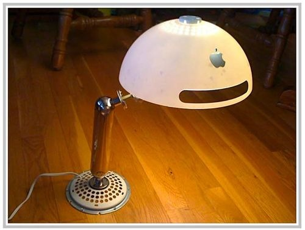
かっくいいです、つくりたい候補。
![[image[11]](./../images/image11.png "[image[11]")
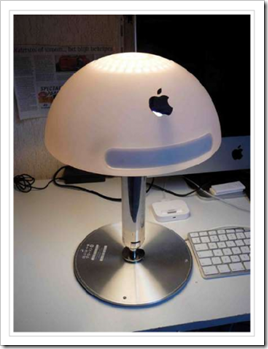
裏のフタをベースとしたアレンジ版。うらフタを使った時計とかもいいですよね。ジャンクになっても愛されるiMacG4、無敵のデザインだと思うんですが。好きな人は好きなんですよね。私も大好きで、4台もっていて、1台は発売当初に購入。3台は中古。中古の1台は稼動中で、音楽再生マシンとなっています。OS9も動くモデルなので、楽しみが増えます。2台は、17インチのジャンク品。改造待ちです。
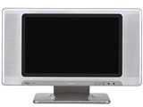ＨＩＴＡＣＨＩ Woo W17-LC50 17V型ワイド液晶テレビ
アナログなTVですが、発売日：2003年 6月10日 で今から8年前のちょっと古めな液晶TVなんです。実はこれ、当時結構高くて、手が出ませんでした。が、しか～し、8年の歳月をかけて、こなれた中古相場になっていました。
価格コムのリンク http://kakaku.com/item/20411010007/
日立の公式リンク http://av.hitachi.co.jp/tv/lcd/index.html
この子は、何がエラいかっていうと、液晶パネル。その名も「アドバンスドスーパーピュアカラー液晶」。IPSパネルなんですが、最上級の日立ディスプレイズの技術の結晶ともいえる、AS-IPS(Advanced Super IPS)を使ってるんですよ！8年経過した今も、やっぱり綺麗で、これに地デジちゅ～なでも埋め込めば、まだまだ現役機種。ざっくりと計算してもTV代込みで1万円で地デジTVになっちゃうなら、と
ついついぽちってしまい、無事GET！
稼動検査のあと、ばら～し。
あちこちのネジをはずし、パネル型番が見えるところまで解体。どうやら、まだ工場でてから、だれにもばらされていないようで、8年ごしに、まる裸にされたようです。
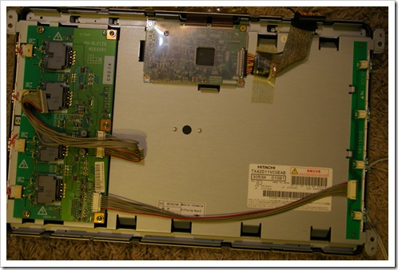
もう、これでもかっていうくらいシールド対策されていました。さすが日本製というところですかね。
で、気になるパネルは、これ。1,280 x 768 なやつで、
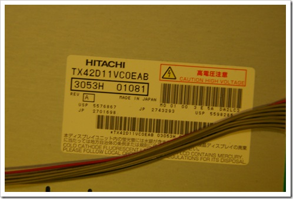
メードインジャパンですよ。TX42D11VC0EAB 3053H 01081 ググってもなんにもでません、、、仕様書みたかったのにね。ま、いいや。
パネルから制御ボードへ行く信号線には、しっかりと網掛けアースしてありました。
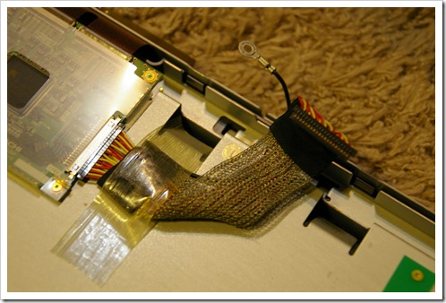
とにかく、これでもかっていうくらいシールド対策が各所に。
制御ボードは両面プリント基板で、結構大きい。
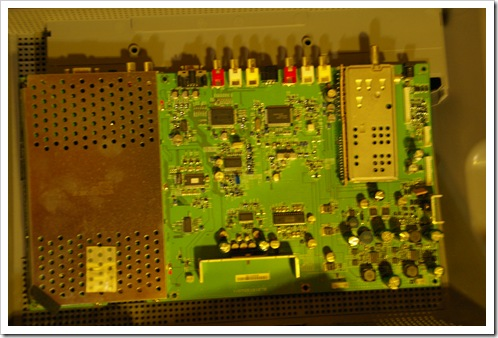
RGBのD-SUB信号が入る部分には全体にアルミでシールドしてあります。
インバータは4発駆動のようですね。
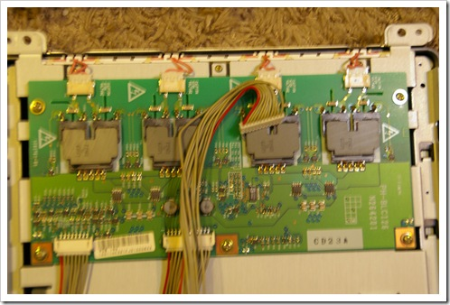
※ピンボケでごみん。
前面パネルは、こんな感じ。スピーカがかわいいですね。
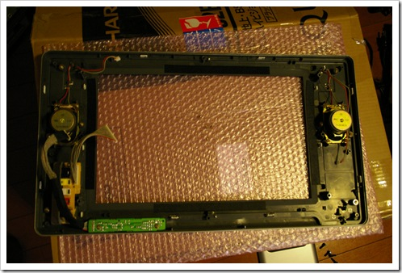
電源は１９Vのでっかいアダプター。3.95A。
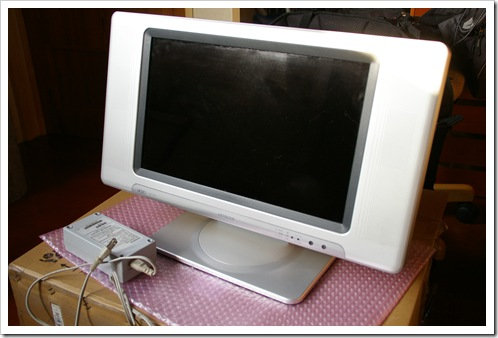
まだまだ使えるモニタですから、カスタムしていろいろ遊んでみましょう。とりあえずは、素材紹介でした。
知る人はBeOSが動きそうなら、やっぱり試したくなるでしょうよ。 PPC用のHaikuを前回記事で見つけたのでちこっと試してみましたyo。

リビジョン40136でがんばってみた。boot-cdはISOファイルでCDに焼き、imageはDDでUSBに書き込み。iMacのUSBポートとCDトレイに乗せて起動。
最初、Cキー押してCD-ROMから起動するのかと思いきや、しないので、OpenFirmwareを起動させる。command+option+o+f のキーを押し続けるとこんな画面が。
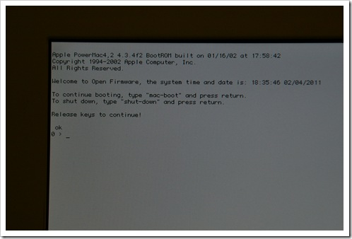
で、こんな感じでコマンドをタイプ。リターン。
boot cd:,\ppc\boot_loader_openfirmware
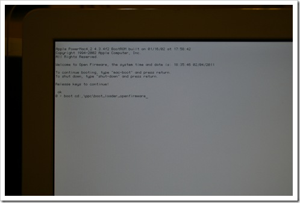
ずらずらと、流れる。動いて～
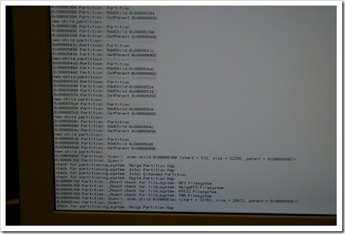
お、いい感じじゃん。いけいけ～
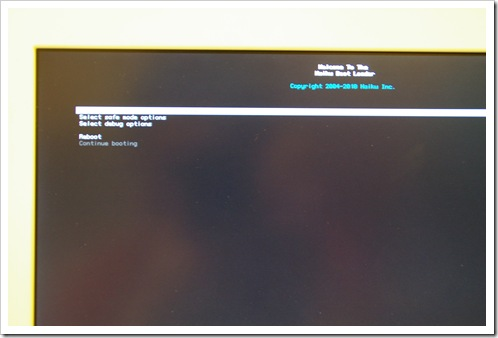
USBのHaikuボリュームを選択して、
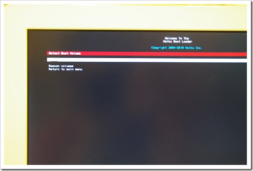
起動せよ！
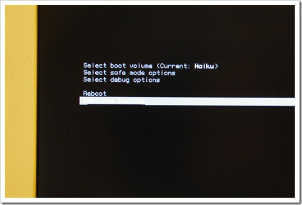
くるのか～？
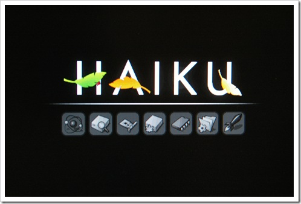
・
・
・
・
・
・
・
・
・
うごかね＝＝＝＝＝＝＝！
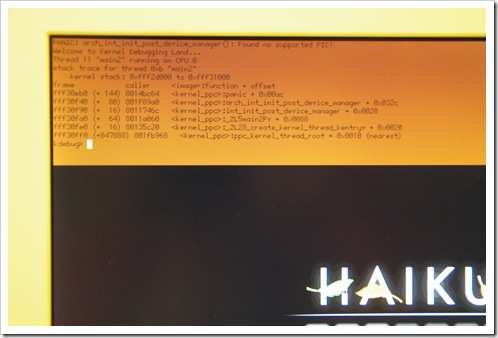
PANICですか、、、、arch_int_init_post_device_manager():Found no supported PIC!
一筋縄ではいかないようで。
3個目のアイコンまではいくようですが、
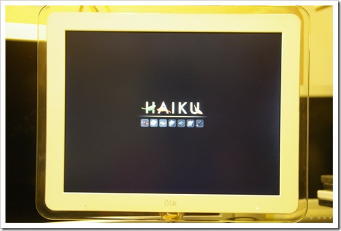
リビジョンを落として試すとか、また今度やってみよう。AirMacカードが入ってるからとか関係あるのかな？
動けば、さくさくなHaikuなはずだから、気を長くしてまた再挑戦してみたいですね。